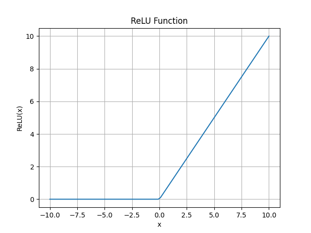
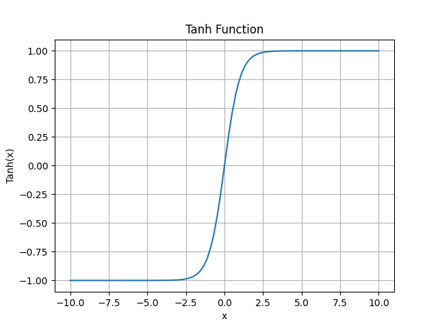

dtorch.nn
Description
This module contain the layers that can be used to construct models. Here is an example of a Linear Neural Network:
from dtorch import nn
from dtorch.jtensors import JTensors
class MyModel(nn.Module):
def __init__(self) -> None:
super().__init__()
self.linear_layer1 = nn.Linear(1, 32)
self.linear_layer2 = nn.Linear(32, 4)
def forward(self, x : JTensors):
return self.linear_layer2(self.linear_layer1(x))
# data
x = JTensors([2, 3, 4, 5])
# model
model = MyModel()
# call the model
# give a tensor of size (4,) as it's the output of the layer2
result = model(x)
Layers
- class Module
The module that other layers and modules are based on.
- save(path: str)
- Parameters:
path (str) – The path where the model will be saved.
Save the model to a file.
- load(path: str)
- Parameters:
path (str) – The path of the model.
Load the model from a file.
- parameters() list[Parameter]
Return the list of parameters of each submodules contained in the model reccursivly. It’s useful to give the control to an optimizer.
- eval()
Set the dropout of the module and submodule to
Falseand therequire_gradsattribute of the parameters toFalse. This permit a faster forward has gradients material don’t need to be kept.
- train()
On the contrary of the
evalmethod, set all dropout and require_grads of parameters toTrue.
- class Linear(Module)
The most basic layer for applying a linear transformation to the data.
- __init__(in_features, out_features, bias=True, device=None, dtype=None)
Applies a linear transformation to the incoming data \(y=xA^T+b\)
- param int in_features:
size of each input sample
- param int out_features:
size of each output sample
- param bool bias:
If set to False, the layer will not learn an additive bias. Default: True
Example:
>> m = nn.Linear(20, 30) >> input = dtorch.random(128, 20) >> output = m(input) >> print(output.size()) (128, 30)
- class Sequential(Module)
A module that when applied, apply each modules that it registered iterativly
- class Softmax(Module)
The equivalent of applying the
functionnal.softmaxmethod.Mathematicaly: \(softmax(z)_j = \frac{e^{z_j}}{\sum{k=1}^Ke^{z_k}}\)
It’s a distribution function used to set result to a pourcentage, usualy used for classification purposes.
- class Sigmoid(Module)
The equivalent of applying
functionnal.sigmoidfunction.Mathematicaly: \(f(x) = \frac{1}{1 + e^{-x}}\)
Similar to
tanhbut the result is in[0, 1]where the result of tanh is in[-1, 1]It’s an activation layer.
- class ReLU(Module)
equivalent to
max(x, 0)in python.According to the universal approximation theorem, any function can be represented using linear and relu layers one after another. It’s actually canceling the backpropagation of the gradients on some neurones.
{kind=link}
- class Tanh(Module)
equivalent to
functionnal.tanhIt define the hyperbolic tangante to the curve. It’s an activation layer.
{kind=link}
- class Dropout(Module)
A layer that randomly make a neurone fail by not passing the data though to next layer with a given probability.
- __init__(p: float = 0.5)
- Parameters:
p (float) – The probaility of each neurone failing.
It’s useful for data augmentation and it has be proven to be a key component to less variance.
- class RNN(Module)
A layer (uni / multi couche) that is used for building Reccurent Neural Networks.
- __init__(input: int, hidden: int, num_layers: int = 1, non_linearity: str = 'tanh', bias: bool = True, batch_first: bool = False, dropout: float = 0)
- Parameters:
input (int) – number of feature per elements.
hidden (int) – size of the context (the second output of the forward)
num_layers (int) – number of reccurent layers. Multiple layers cover more efficiently complex functions. Default : 1
non_linearity (str) – The activation function that is used σ. Default: ‘tanh’. Possibles ‘tanh’, ‘sigmoid’.
batch_first (bool) – Default to
False. If false, input shape is(sequence_size, batch_size, input_size)else(batch_size, sequence_size, input_size)bias (bool) – Determine if a weight should be added in the calcul or not. Default : False.
dropout (float) – Parameter that add a layer between layers and context similarly to the
ReLUlayer.
Mathematicaly, if \(h_t\) is the hidden state at time t, σ is the non_linearity function, Wi is the input weight and Wh is the hidden weight. Then if bias is False \(h_t = W_i * x_t + W_h * h_{t-1}\)
Otherwise, with \(B_i\) being the bias of the input and \(B_h\) being the bias of the hidden state: \(h_t = W_i * x_t + B_i + W_h * h_{t-1} + B_h\)
\(H_0\) is usualy initialised at 0, whereas other weights are initialised from the
xavierdistribution.When calling the model, this one will output a tuple
(y, hidden_state)
- class Conv1d(Module)
A layer for convolution with weights that adapt through training.
Warning
This module has not been tested throughfully yet. If any problem seem to resort, do not hesitate to report about it on the github of the project.
- __init__(in_channels: int, out_channels: int, kernel_size: int, stride: int | None = 1, bias: bool = True)
- Parameters:
in_channels (int) – The number of channels the data has. Ex: In an image with 3 color, the data may have 3 channels.
out_channels (int) – Number of channel the output data need to have.
kernel_size (int) – width of the convolution kernel (the window going through the data).
stride (Optional[int]) – Default to 1. This parameter define the number of step the window take in space. (Not tested yet.)
bias (bool) – Define if a bias weight should be used.
Input shape:(batch, in_channel, width)Output shape:(batch, out_channel, width - kernel_size)without counting the stride.This layer is often used for a network to understand a complex data like images and audio.
- class Conv2d(Module)
Note
Implemented soon. (within 2 weeks)